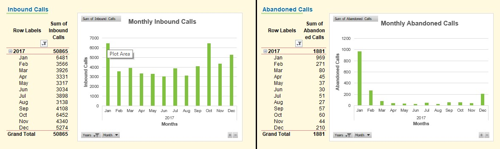

Your manager has requested your help to find out how well (or not) your call center is functioning. You are provided with a file with some data for each month the call-center has been in business. (The Month column contains dates but they are showing up as numbers—can you please fix that? 😉) Please use the Recommendations sheet to convey what you feel are the four most important insights your analysis of the data provides. In your written insights, please reference at least one of the charts you have created that supports your insights.
Please deliver one insight for each of the metrics defined below.
Begin by thinking of yourself as the owner of this call center. How would you judge your success based on this data? What would the data have to show for you to say that you have improved? What would be some actions you could take to improve (or maintain) the recorded results?